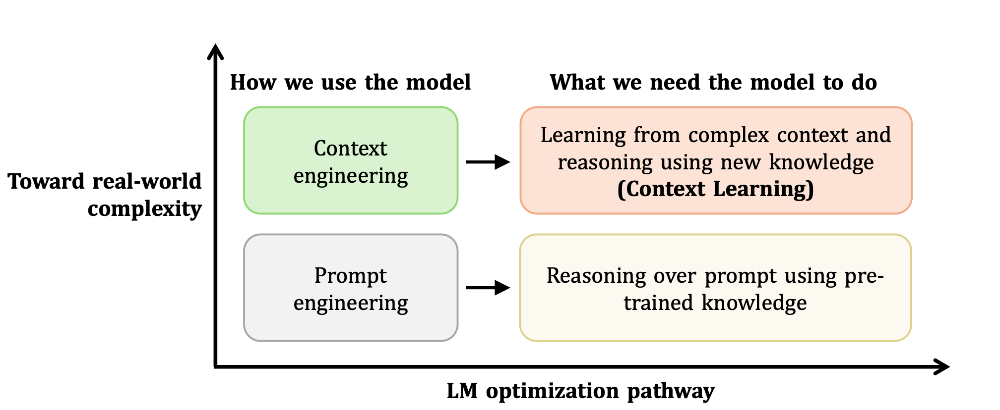
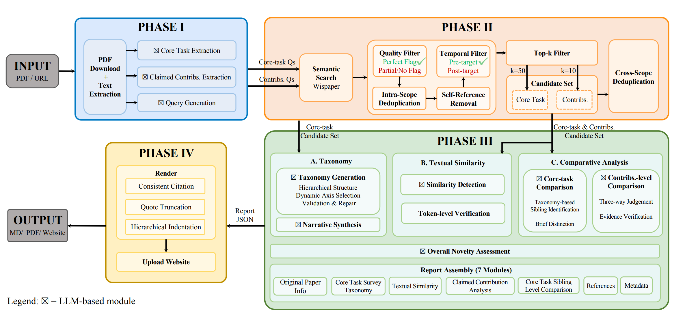
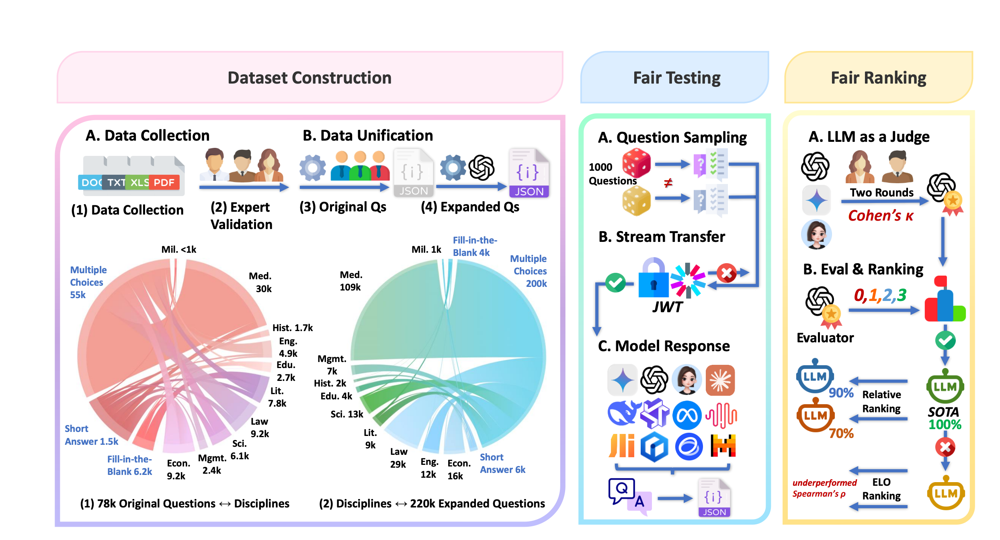
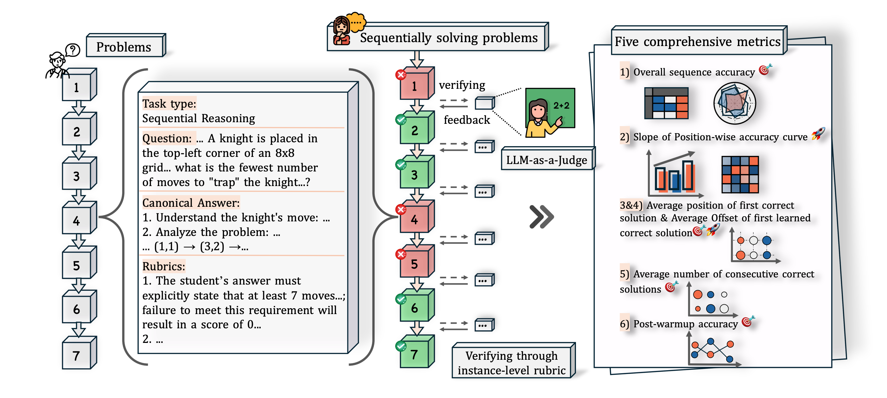
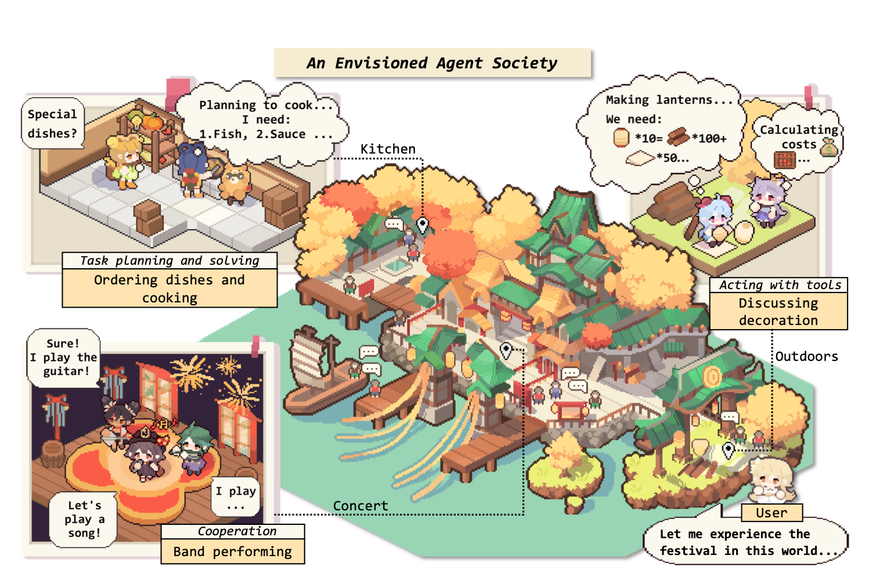

👋 Hi, I'm Ming Zhang (张明), also known as DinoBro (恐龙哥) or DinoDoctor (恐龙博士). I am a third-year direct Ph.D. student at the FudanNLP Lab, School of Computer Science, Fudan University, co-advised by Prof. Qi Zhang, A.P. Tao Gui, and Prof. Xuanjing Huang.
🔬 My research focuses on Large Language Model Evaluation and Dialogue Systems. Recently, I have been particularly interested in Context Learning and AI for Academia.
🏢 I previously interned at ByteDance (2024.09 – 2025.09) and am currently interning at the Tencent Qingyun Program (2025.12 – Present).
📝 I serve as a Reviewer for AAAI, ACL ARR, ICLR, NeurIPS, and ICML, and as an Area Chair for ACL ARR.
Beyond research, my personal interests include:
🔭 I have been a lifelong astronomy enthusiast and served as President of the Fudan Astronomy Society during my undergraduate years.
⚽ I am a devoted fan of football — my all-time idol is Lionel Andrés Messi. Congratulations to Messi and Argentina on reaching the 2026 FIFA World Cup Final — his third World Cup final! 🇦🇷
🎮 I served as Captain of the Fudan University League of Legends Varsity Team (Jungle), peaked at Challenger (最强王者) in S3 and S12, and my favorite champion lately is Gangplank.
📧 mingzhang23 [at] m [dot] fudan [dot] edu [dot] cn / konglongge [at] outlook [dot] com
💬 Please feel free to add me on WeChat: zanyingluan
🔥 News
- 2026.07 ✈️ Attended ACL 2026 in San Diego, USA.
- 2026.05 📄 LLMEval-Logic is now available on arXiv!
- 2026.05 🎉 SciAgentGym accepted by ICML 2026!
- 2026.04 🌐 The official LLMEval Project Website is now live!
- 2026.04 🎉 LLMEval-Fair, VRPO, and Beyond Scaling accepted by ACL 2026 Main! Speech Reward and Muse accepted by ACL 2026 Findings!
- 2026.02 🎉 Thinking with Video accepted by CVPR 2026!
- 2026.02 📄 CL-bench is now available on arXiv!
- 2026.01 📄 OpenNovelty and TaxoBench are now available on arXiv!
- 2026.01 🎉 Game-RL accepted by ICLR 2026!
- 2025.11 🎉 Reasoning or Memorization and Speech Tokenizer accepted by AAAI 2026!
- 2025.12 ✈️ Attended NeurIPS 2025 in San Diego, USA.
- 2025.11 ✈️ Attended EMNLP 2025 in Suzhou, China.
- 2025.09 🎉 EvaLearn accepted by NeurIPS 2025!
- 2025.08 🎉 LLMEval-Med accepted by EMNLP 2025!
- 2025.05 🎉 PFDial accepted by ACL 2025!
- 2025.01 🎉 Our LLM Agent Survey published in Science China Information Sciences!
- 2024.12 ✈️ Attended CIPS-LMG 2024 in Jiaxing, China.
- 2024.11 ✈️ Attended EMNLP 2024 in Miami, USA.
- 2024.09 🎉 TransferTOD and MathTrap accepted by EMNLP 2024!
- 2024.07 🎉 Mousi accepted by COLM 2024!
- 2023.12 🎉 LLMEval accepted by AAAI 2024!
✈️ Conferences & Travels
⭐ Selected Works
* denotes co-first author, † denotes corresponding author.

CL-bench: A Benchmark for Context Learning
A comprehensive benchmark for evaluating context learning capabilities of large language models, providing systematic assessment across diverse context-dependent tasks.


LLMEval-Fair: A Large-Scale Longitudinal Study on Robust and Fair Evaluation of Large Language Models ACL 2026
A large-scale longitudinal study on the robustness and fairness of LLM evaluation, addressing critical issues in benchmarking consistency and providing reliable evaluation methodologies.

EvaLearn: Quantifying the Learning Capability and Efficiency of LLMs via Sequential Problem Solving NeurIPS 2025
A novel framework for quantifying the learning capability and efficiency of large language models through sequential problem solving, providing new insights into how LLMs acquire and apply knowledge.

The Rise and Potential of Large Language Model Based Agents: A Survey SCIS
A comprehensive survey on LLM-based agents covering their construction, applications, and evaluation. This highly influential work provides a systematic overview of the emerging field of autonomous agents powered by large language models. Published in Science China Information Sciences.